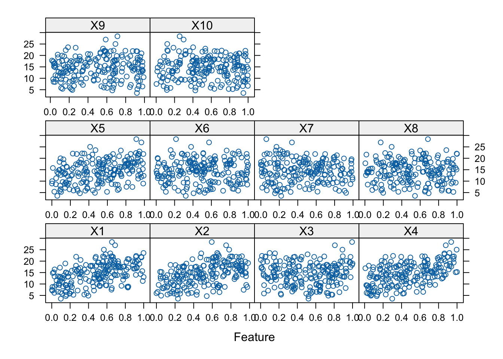

library(mlbench)
library(caret)
library(earth)
library(e1071)
library(nnet)Exercise 4
Import Libraries
Generate training/test datasets, visualize and pre-process data
# Set seed for reproducibility
set.seed(200)
# Training Data
training_data <- mlbench.friedman1(200, sd = 1)
training_data$x <- data.frame(training_data$x)
# Visualize
featurePlot(training_data$x, training_data$y)
# Test Data
test_data <- mlbench.friedman1(5000, sd = 1)
test_data$x <- data.frame(test_data$x)
# Center and Scale Data
pre_process_data <- preProcess(training_data$x, method = c("center", "scale"))
train_transformed <- predict(pre_process_data, training_data$x)
test_transformed <- predict(pre_process_data, test_data$x)k-Nearest Neighbors (kNN):
set.seed(200)
knn_model <- train(training_data$x,
training_data$y,
method = "knn",
preProc = c("center", "scale"),
tuneLength = 10)
knn_predictions <- predict(knn_model, newdata = test_data$x)
knn_results <- postResample(pred = knn_predictions, obs = test_data$y)
knn_modelk-Nearest Neighbors
200 samples
10 predictor
Pre-processing: centered (10), scaled (10)
Resampling: Bootstrapped (25 reps)
Summary of sample sizes: 200, 200, 200, 200, 200, 200, ...
Resampling results across tuning parameters:
k RMSE Rsquared MAE
5 3.654912 0.4779838 2.958475
7 3.529432 0.5118581 2.861742
9 3.446330 0.5425096 2.780756
11 3.378049 0.5723793 2.719410
13 3.332339 0.5953773 2.692863
15 3.309235 0.6111389 2.663046
17 3.317408 0.6201421 2.678898
19 3.311667 0.6333800 2.682098
21 3.316340 0.6407537 2.688887
23 3.326040 0.6491480 2.705915
RMSE was used to select the optimal model using the smallest value.
The final value used for the model was k = 15.Multivariate Adaptive Regression Splines (MARS):
set.seed(200)
mars_model <- train(training_data$x,
training_data$y,
method = "earth",
preProc = c("center", "scale"),
tuneLength = 10)
mars_predictions <- predict(mars_model, newdata = test_data$x)
mars_results <- postResample(pred = mars_predictions, obs = test_data$y)
mars_modelMultivariate Adaptive Regression Spline
200 samples
10 predictor
Pre-processing: centered (10), scaled (10)
Resampling: Bootstrapped (25 reps)
Summary of sample sizes: 200, 200, 200, 200, 200, 200, ...
Resampling results across tuning parameters:
nprune RMSE Rsquared MAE
2 4.447045 0.2249607 3.650128
3 3.744821 0.4546610 3.019175
4 2.828643 0.6892908 2.244131
6 2.406670 0.7747079 1.906733
7 2.027113 0.8375721 1.594956
9 1.800794 0.8728377 1.411703
10 1.810047 0.8721377 1.412023
12 1.831608 0.8700790 1.430044
13 1.839717 0.8686550 1.440537
15 1.856211 0.8663787 1.452430
Tuning parameter 'degree' was held constant at a value of 1
RMSE was used to select the optimal model using the smallest value.
The final values used for the model were nprune = 9 and degree = 1.Neural Network
set.seed(200)
neural_network_model <- train(training_data$x,
training_data$y,
method = "nnet",
preProc = c("center", "scale"),
tuneLength = 10,
trace = FALSE,
maxit = 1000)
neural_network_predictions <- predict(neural_network_model, newdata = test_data$x)
neural_network_results <- postResample(pred = neural_network_predictions, obs = test_data$y)
neural_network_modelNeural Network
200 samples
10 predictor
Pre-processing: centered (10), scaled (10)
Resampling: Bootstrapped (25 reps)
Summary of sample sizes: 200, 200, 200, 200, 200, 200, ...
Resampling results across tuning parameters:
size decay RMSE Rsquared MAE
1 0.0000000000 14.47801 NaN 13.59034
1 0.0001000000 14.47801 0.46388412 13.59034
1 0.0002371374 14.47802 0.54494073 13.59034
1 0.0005623413 14.47802 0.61944972 13.59034
1 0.0013335214 14.47802 0.09093040 13.59035
1 0.0031622777 14.47802 0.30228015 13.59035
1 0.0074989421 14.47803 0.56808124 13.59036
1 0.0177827941 14.47805 0.71039904 13.59038
1 0.0421696503 14.47809 0.73040205 13.59043
1 0.1000000000 14.47818 0.73494609 13.59053
3 0.0000000000 14.47801 NaN 13.59034
3 0.0001000000 14.47801 0.34800441 13.59034
3 0.0002371374 14.47802 0.45676945 13.59034
3 0.0005623413 14.47802 0.43051350 13.59034
3 0.0013335214 14.47802 0.17944723 13.59034
3 0.0031622777 14.47802 0.34885263 13.59035
3 0.0074989421 14.47802 0.66340789 13.59035
3 0.0177827941 14.47804 0.71716435 13.59037
3 0.0421696503 14.47807 0.71146831 13.59040
3 0.1000000000 14.47813 0.73501063 13.59047
5 0.0000000000 14.47801 NaN 13.59034
5 0.0001000000 14.47801 0.34108207 13.59034
5 0.0002371374 14.47801 0.43036960 13.59034
5 0.0005623413 14.47802 0.21949661 13.59034
5 0.0013335214 14.47802 0.16071675 13.59034
5 0.0031622777 14.47802 0.39392125 13.59034
5 0.0074989421 14.47802 0.62726936 13.59035
5 0.0177827941 14.47803 0.71623817 13.59036
5 0.0421696503 14.47805 0.73402288 13.59039
5 0.1000000000 14.47810 0.73466004 13.59044
7 0.0000000000 14.47801 NaN 13.59034
7 0.0001000000 14.47801 0.23898081 13.59034
7 0.0002371374 14.47801 0.35110213 13.59034
7 0.0005623413 14.47802 0.23402091 13.59034
7 0.0013335214 14.47802 0.12715521 13.59034
7 0.0031622777 14.47802 0.39694516 13.59034
7 0.0074989421 14.47802 0.60175109 13.59035
7 0.0177827941 14.47803 0.70582638 13.59036
7 0.0421696503 14.47805 0.72921800 13.59038
7 0.1000000000 14.47809 0.73543577 13.59043
9 0.0000000000 14.47801 NaN 13.59034
9 0.0001000000 14.47801 0.14616290 13.59034
9 0.0002371374 14.47801 0.18887281 13.59034
9 0.0005623413 14.47802 0.13174456 13.59034
9 0.0013335214 14.47802 0.12235462 13.59034
9 0.0031622777 14.47802 0.34661430 13.59034
9 0.0074989421 14.47802 0.61749255 13.59035
9 0.0177827941 14.47803 0.68744029 13.59036
9 0.0421696503 14.47805 0.72754367 13.59038
9 0.1000000000 14.47808 0.73665992 13.59042
11 0.0000000000 14.47801 NaN 13.59034
11 0.0001000000 14.47801 0.08908443 13.59034
11 0.0002371374 14.47801 0.28164363 13.59034
11 0.0005623413 14.47801 0.05349839 13.59034
11 0.0013335214 14.47802 0.10594059 13.59034
11 0.0031622777 14.47802 0.31727910 13.59034
11 0.0074989421 14.47802 0.63361111 13.59035
11 0.0177827941 14.47803 0.69885458 13.59035
11 0.0421696503 14.47804 0.72941521 13.59037
11 0.1000000000 14.47808 0.73750572 13.59041
13 0.0000000000 14.47801 NaN 13.59034
13 0.0001000000 14.47801 0.19210023 13.59034
13 0.0002371374 14.47802 0.11206074 13.59034
13 0.0005623413 14.47801 0.09392261 13.59034
13 0.0013335214 14.47802 0.13329265 13.59034
13 0.0031622777 14.47802 0.41331057 13.59034
13 0.0074989421 14.47802 0.63739490 13.59035
13 0.0177827941 14.47803 0.69752049 13.59035
13 0.0421696503 14.47804 0.73035630 13.59037
13 0.1000000000 14.47807 0.73589138 13.59041
15 0.0000000000 14.47801 NaN 13.59034
15 0.0001000000 14.47801 0.13752235 13.59034
15 0.0002371374 14.47802 0.05144031 13.59034
15 0.0005623413 14.47801 0.12997206 13.59034
15 0.0013335214 14.47802 0.12810176 13.59034
15 0.0031622777 14.47802 0.40560042 13.59034
15 0.0074989421 14.47802 0.62308752 13.59035
15 0.0177827941 14.47803 0.69911203 13.59035
15 0.0421696503 14.47804 0.73074432 13.59037
15 0.1000000000 14.47807 0.73527103 13.59040
17 0.0000000000 14.47801 NaN 13.59034
17 0.0001000000 14.47801 0.13660237 13.59034
17 0.0002371374 14.47801 0.08365132 13.59034
17 0.0005623413 14.47801 0.10863086 13.59034
17 0.0013335214 14.47802 0.10883388 13.59034
17 0.0031622777 14.47802 0.38999051 13.59034
17 0.0074989421 14.47802 0.58645670 13.59035
17 0.0177827941 14.47802 0.69878013 13.59035
17 0.0421696503 14.47804 0.72499187 13.59037
17 0.1000000000 14.47807 0.73501430 13.59040
19 0.0000000000 14.47801 NaN 13.59034
19 0.0001000000 14.47801 0.13346317 13.59034
19 0.0002371374 14.47802 0.05506695 13.59034
19 0.0005623413 14.47801 0.06037268 13.59034
19 0.0013335214 14.47802 0.11693798 13.59034
19 0.0031622777 14.47802 0.39541966 13.59034
19 0.0074989421 14.47802 0.61412118 13.59035
19 0.0177827941 14.47802 0.70122881 13.59035
19 0.0421696503 14.47804 0.73065305 13.59037
19 0.1000000000 14.47806 0.73737851 13.59040
RMSE was used to select the optimal model using the smallest value.
The final values used for the model were size = 1 and decay = 0.# Check for N/A values
sum(is.na(training_data$x))[1] 0sum(is.na(training_data$y))[1] 0Support Vector Machines (SVM)
set.seed(200)
svm_model <- train(training_data$x,
training_data$y,
method = "svmRadial",
preProc = c("center", "scale"),
tuneLength = 10)
svm_predictions <- predict(svm_model, newdata = test_data$x)
svm_results <- postResample(pred = svm_predictions, obs = test_data$y)
svm_modelSupport Vector Machines with Radial Basis Function Kernel
200 samples
10 predictor
Pre-processing: centered (10), scaled (10)
Resampling: Bootstrapped (25 reps)
Summary of sample sizes: 200, 200, 200, 200, 200, 200, ...
Resampling results across tuning parameters:
C RMSE Rsquared MAE
0.25 2.635010 0.7685188 2.074977
0.50 2.423373 0.7839086 1.902162
1.00 2.284133 0.8001542 1.791776
2.00 2.196624 0.8126474 1.713560
4.00 2.143035 0.8209820 1.668024
8.00 2.119154 0.8246316 1.649386
16.00 2.117441 0.8248674 1.648573
32.00 2.117441 0.8248674 1.648573
64.00 2.117441 0.8248674 1.648573
128.00 2.117441 0.8248674 1.648573
Tuning parameter 'sigma' was held constant at a value of 0.06299324
RMSE was used to select the optimal model using the smallest value.
The final values used for the model were sigma = 0.06299324 and C = 16.k-Nearest Neighbors (kNN) Results:
knn_results RMSE Rsquared MAE
3.1750657 0.6785946 2.5443169 Multivariate Adaptive Regression Splines (MARS) Results:
mars_results RMSE Rsquared MAE
1.7901760 0.8705315 1.3712537 Neural Network Results:
neural_network_results RMSE Rsquared MAE
14.27693 NA 13.38691 Support Vector Machines (SVM) Results:
svm_results RMSE Rsquared MAE
2.0736997 0.8256573 1.5751967 MARS Model - Variable Importance
varImp(mars_model)earth variable importance
Overall
X1 100.00
X4 82.92
X2 64.47
X5 40.67
X3 28.65
X6 0.00Model Performance Comparison
The optimal k for the k-NN model is 15. The optimal nprune for the MARS model is 9. The optimal size is 1, and the optimal decay is 0 for the neural network model. The optimal C is 16, and the optimal σ is 0.063 for the SVM-RBF model. Given the above output results, the MARS model performed best with the highest R-squared of 0.871 and the lowest RMSE of 1.790. Upon inspection of the variable importance for the MARS model, we conclude the most informative predictors to be X1, X4, X2, X5, and X3 (descending order). The X6 predictor is not informative.